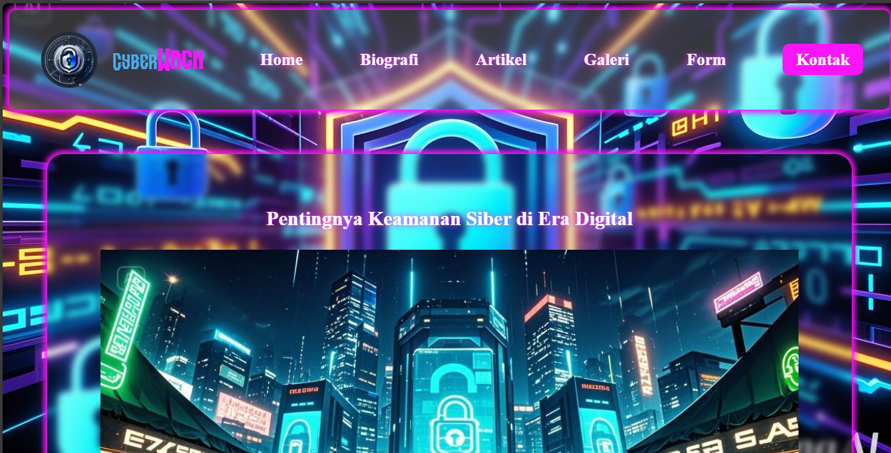
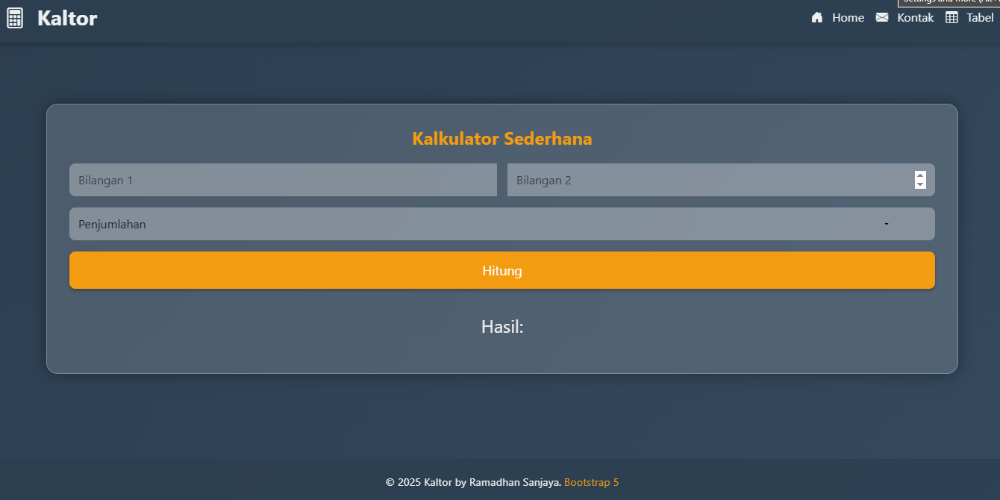

Tugas 3 dalam mata kuliah Pemrograman Web adalah membuat sebuah website sederhana dengan menggunakan bahasa pemrograman HTML dan CSS sebagai dasar tampilan awal.
Tugas 4 dalam mata kuliah Pemrograman Web adalah mengembangkan website yang telah dibuat sebelumnya dengan menambahkan fitur-fitur dari CSS3.
Tugas ini bertujuan untuk membuat aplikasi kalkulator sederhana menggunakan JavaScript, yang dapat melakukan operasi matematika dasar: tambah, kurang, kali, dan bagi.
Tugas ini bertujuan untuk membuat aplikasi kalkulator sederhana menggunakan JavaScript, yang dapat melakukan operasi matematika dasar: tambah, kurang, kali, dan bagi.